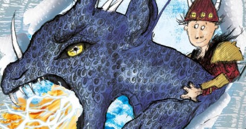

Once Upon a Page
Once Upon a Page

First Catch Your Dragon

Long ago, on the wild and windy isle of Berk, a smallish Viking with a longish name stood up to his ankles in snow.
Hiccup Horrendous Haddock the Third, the Hope and Heir to the Tribe of the Hairy Hooligans, had been feeling slightly sick ever since he woke up that morning.
Ten boys, including Hiccup, were hoping to become full members of the Tribe by passing the Dragon Initiation Programme. They were standing on a bleak little beach at the bleakest spot on the whole bleak island. A heavy snow was falling.
"PAY ATTENTION!" screamed Gobber the Belch, the soldier in charge of teaching Initiation. "This will be your first military operation, and Hiccup will be commanding the team."
"Oh, not Hic‐cup," groaned Dogsbreath the Duhbrain and most of the other boys. "You can't put Hiccup in charge, sir, he's USELESS."
Hiccup Horrendous Haddock the Third, the Hope and Heir to the Tribe of the Hairy Hooligans, wiped his nose miserably on his sleeve. He sank a little deeper into the snow.
"ANYBODY would be better than Hiccup," sneered Snotface Snotlout. "Even Fishlegs would be better than Hiccup."
Fishlegs had a squint that made him as blind as a jellyfish, and an allergy to reptiles.
"SILENCE!" roared Gobber the Belch. "The next boy to speak has limpets for lunch for the next THREE WEEKS!"
There was absolute silence immediately. Limpets are a bit like worms and a bit like snot and a lot less tasty than either.
"Hiccup will be in charge and that is an order!" screamed Gobber, who didn't do noises quieter than screaming. He was a seven‐foot giant with a mad glint in his one working eye and a beard like exploding fireworks. Despite the freezing cold he was wearing hairy shorts and a teeny weeny deerskin vest that showed off his lobster‐red skin and bulging muscles. He was holding a flaming torch in one gigantic fist.
"Hiccup will be leading you, although he is, admittedly, completely useless, because Hiccup is the son of the CHIEF, and that's the way things go with us Vikings. Where do you think you are, the REPUBLIC OF ROME? Anyway, that is the least of your problems today. You are here to prove yourself as a Viking Hero. And it is an ancient tradition of the Hooligan Tribe that you should—" Gobber paused dramatically— "FIRST CATCH YOUR DRAGON!"
Ohhhhhh suffering scallops, thought Hiccup.
"Our dragons are what set us apart!" bellowed Gobber. "Lesser humans train hawks to hunt for them, horses to carry them. It is only the VIKING HEROES who dare to tame the wildest, most dangerous creatures on Earth."
Gobber spat solemnly into the snow. "There are three parts to the Dragon Initiation Test. The first and most dangerous part is a test of your courage and skill at burglary. If you wish to enter the Hairy Hooligan Tribe, you must first catch your dragon. And that is WHY," continued Gobber, at full volume, "I have brought you to this scenic spot. Take a look at Wild Dragon Cliff itself"
The ten boys tipped their heads backward.
The cliff loomed dizzyingly high above them, black and sinister. In summer you could barely even see the cliff as dragons of all shapes and sizes swarmed over it, snapping and biting and sending up a cacophony of noise that could be heard all over Berk.
But in winter the dragons were hibernating and the cliff fell silent, except for the ominous, low rumble of their snores. Hiccup could feel the vibrations through his sandals.
"Now," said Gobber, "do you notice those four caves about halfway up the cliff, grouped roughly in the shape of a skull?"
"Inside the cave that would be the right eye of the skull is the Dragon Nursery, where there are, AT THIS VERY MOMENT, three thousand young dragons having their last few weeks of winter sleep."
"OOOOOOOH," muttered the boys excitedly.
Hiccup swallowed hard. He happened to know considerably more about dragons than anybody else there. Ever since he was a small boy, he'd been fascinated by the creatures. He'd spent hour after long hour dragon watching in secret. (Dragon‐spotters were thought to be geeks and nerds, hence the need for secrecy.) And what Hiccup had learned about dragons told him that walking into a cave with three thousand dragons in it was an act of madness.
No one else seemed too concerned, however.
"In a few minutes I want you to take one of these baskets and start climbing the cliff," commanded Gobber the Belch. "Once you are at the cave entrance, you are on your own. I am too large to squeeze my way into the tunnels that lead to the Dragon Nursery. You will enter the cave QUIETLY—and that means you too, Wartihog, unless you want to become the first spring meal for three thousand hungry dragons, HA HA HA HA!?
Gobber laughed heartily at his little joke, then continued. "Dragons this size are normally fairly harmless to man, but in these numbers they will set upon you like piranhas. There'd be nothing left of even a fatso like you, Wartihog—just a pile of bones and your helmet. HA HA HA HA! So . . . you will walk QUIETLY through the cave and each boy will steal ONE sleeping dragon. Lift the dragon GENTLY from the rock and place it in your basket. Any questions so far?"
Nobody had any questions.
"In the unlikely event that you DO wake the dragons—and you would have to be IDIOTICALLY STUPID to do so—run like thunder for the entrance to the cave. Dragons do not like cold weather and the snow will probably stop them in their tracks."
Probably? thought Hiccup. Oh, well, that's reassuring.
"I suggest that you spend a little time choosing your dragon. It is important to get one the correct size. This will be the dragon that hunts fish for you, and pulls down deer for you. You will catch the dragon that will carry you into battle later on, when you are much older and a Warrior of the Tribe. But, nonetheless, you want an impressive animal, so a rough guide would be, choose the biggest creature that will fit into your basket. Don't linger for TOO long in there—"
Linger??? thought Hiccup. In a cave full of three thousand sleeping DRAGONS?
"I need not tell you," Gobber continued cheerfully, "that if you return to this spot without a dragon, it is hardly worth coming back at all. Anybody who FAILS this task will be put into immediate exile. The Hairy Hooligan Tribe has no use for FAILURES. Only the strong can belong."
Unhappily, Hiccup looked round at the distant horizon. Nothing but snow and sea as far as the eye could see. Exile didn't look too promising, either.
"RIGHT," said Gobber briskly. "Each boy take a basket to put their dragon in and we'll get going."
The boys rushed to get their baskets, chattering happily and excitedly.
"I'm going to get one of those Monstrous Nightmare ones with the extra‐extendable claws. They're really scary," boasted Snotlout.
"Oh shut up, Snotlout, you can't," said Speedifist. "Only Hiccup can have a Monstrous Nightmare, you have to be the son of a chief" Hiccup's father was Stoick the Vast, the fearsome chief of the Hairy Hooligan tribe.
''HIC‐CUP??” sneered Snotlout. "If he's as useless at this as he is at Bashyball, we'll be lucky if he even gets one of the Basic Browns."
The Basic Brown was the most common type of dragon, a serviceable beast but without much glamour.
"SHUDDUP AND GET INTO LINE YOU MISERABLE TADPOLES!" yelled Gobber the Belch.
The boys scrambled into their places, baskets on their backs, and stood to attention. Gobber walked along the line, lighting the torch that each boy held in front of him from the great flare in his hand.
"IN HALF AN HOUR'S TIME YOU WILL BE A VIKING WARRIOR, WITH YOUR FAITHFUL SERPENT AT YOUR SIDE . . .
. . . OR BREAKFASTING WITH WODEN IN VALHALLA WITH DRAGONS' TEETH IN YOUR BOTTONI!" screamed Gobber with horrible enthusiasm.
"DEATH OR GLORY!" yelled Gobber.
"DEATH OR GLORY!” yelled eight boys back at him fanatically.
Death, thought Hiccup and Fishlegs, sadly.
Gobber paused dramatically, with the horn to his lips.
I think this could possibly be the worst moment of my life SO FAR, thought Hiccup to himself as he waited for the blast of the horn. And if they shout much louder, we're going to wake up those dragons before we even START.
"PARRRPRRRRRP!" Gobber blew the horn.